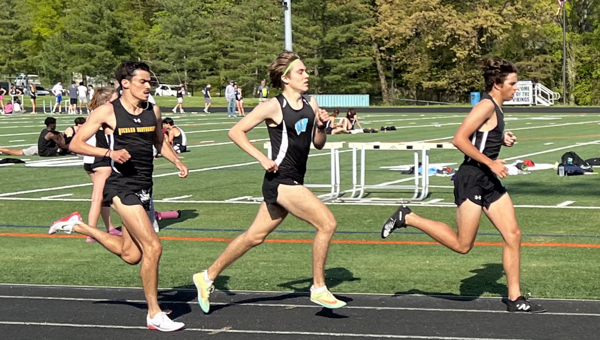

I have a wide range of interests that keep me engaged both academically and personally. As a student of Computer Science and Finance at Northeastern University, I'm particularly fascinated by the intersection of technology and finance. My academic journey has sparked a passion for financial modeling. I enjoy coding in languages like Java and SQL, and I love the challenge of solving complex problems through code. This academic curiosity also extends into my extracurricular activities, where I participate in tech-related clubs. Outside of my studies, sports play a significant role in my life. Growing up, I played soccer and ran cross country and track. This taught me discipline, time management, and teamwork. Even now, I stay active by playing intramural soccer and going to the gym and by following my favorite teams—FC Barcelona, the Washington Commanders, and the Boston Celtics. I’m an avid fan and love analyzing the strategies behind games, whether it's the fast-paced nature of basketball or the intricate plays in football and soccer. Lastly, I love exploring new cultures and traveling. Having been born in Bogotá, Colombia, and moving to the U.S., I’ve experienced different lifestyles and perspectives, which shaped my global outlook. Traveling and learning about diverse cultures continue to be one of my biggest passions and I look forward to traveling in the future.
